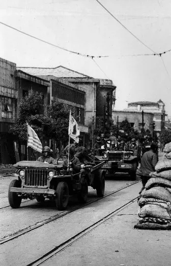

평양 공세 작전지도
인천 상륙 작전의 성공, 서울 탈환으로 승기를 잡은 국군과 UN연합군은 승기를 잡고 낙동강 방어선을 넘어
북한군을 몰아내었고 북한군은 낙동강 전선아래 있던 모든 병력들을 철수 시킵니다. 하지만 북한군의 주 병력들은
이미 낙동강 전선에서 괴멸당한 상태였고 훈련도 제대로 안된 신병들로만 구성되어 있었습니다. 반면에 국군과 UN연합군은
지속적인 증강 병력을 인해서 전력을 보충하였고 국군과 UN군은 38선 아래 모든 영토를 수복하게 됩니다.
국군과 연합군은 한반도에 존재하는 모든 공산 세력들을 제거하기 위해 38선을 넘어 북진을 시도하였고 국군이 38선을 넘을 무렵
맥아더 장군과 미 제8군 사령관 원턴 워커 장군은 전쟁의 승리를 확신하기 위해 북한의 수도인 평양을 탈환할 계획을 구상합니다.

태극기와 성조기를 앞세운 차량이 평양 시내로 진입하는 모습
10월 17일 국군과 UN군은 이른 날 아침부터 진격을 시작하나 적군의 완강한 저항으로 제대로된 진격을 하지 못하게됩니다. 주 공격을 담당한 국군 제 12연대는 미 전차대대의 지원으로 대동리를 목표를 진격하는데 대통리 남쪽 도로 좌우에 솟아 있는 반용산과 관음산의 기성진지에서 저항하는 2개 대대규모의 인민군들을 격파한후 10:00시 까지 대동리를 탈환하게 됩니다. 12연대는 패주하는 적들을 계속 쫒아가서 토벌을 합니다. 가만히 후퇴만을 반복할 수 없었던 북한군은 대동강 지류인 남강을 방어선으로 삼아 6대의 전차와 7문의 곡사포 등의 지원을 받으면서 완강한 방어선을 구축합니다. 특히 인민군 제1 방어선의 저항은 매우 완강해 국군과 UN연합군의 맹렬한 진격에도 뚫리지 않았고 진격로에 수많은 지뢰를 매설하여 연합군이 진격을 하기 어렵도록 방어를 합니다. 하지만 북한군의 완강한 저항에도 연합군은 끝내 방어선을 돌파하게 됩니다. 한편 국군 제 15연대는 북한 패잔병들을 격파하면서 삼청동-광청리-승호리 일대까지 진출합니다.연합군이 서울을 탈환할때 부터 조선민주주의인민공화국의 정부 및 수뇌부들은 이미 평양에서 철수준비를 하고있는 상태였습니다. 이들은 10월 9일부터 평양에서 본격적으로 철수를 실시하는데 김일성 역시 10월 12일 평양을 빠져나와 덕천으로 피신했다가 임시 수도 강계 근처로 도망가 버립니다. 사실상 평양은 껍데기밖에 남지 않은 상태였던 것이지요 하지만 평양의 함락으로 북한은 사실상 괴멸직전으로 돌입하게 되고 위기감을 느낀 김일성은 중국과 소련에게 지원 요청하였고 이는 중국과 소련이 참전하게 되는 계기가 됩니다.
참고자료
한국민족문화대백과사전(평양탈환전투(平壤奪還戰鬪))